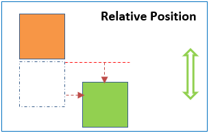
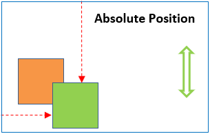
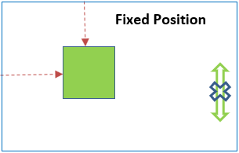

What are the differences between relative, absolute, and fixed positioning?
HTML and CSS
5 April 2023
All webpage layouts are built using common elements that all have rectangular shape. Positioning in CSS is concerned with the position of these rectangular elements within the natural flow of the document. These rectangular elements are either displayed vertically (known as block display) or horizontally (known as inline display).
Relative positioning
Relative positioning is where an elements position is 'relative' to itself. Applying relative position to an element means that you can shift the element left, right, up and down away from it's static position. But the element's place in the original document flow is still held.
Absolute positioning
Absolute postioning is where an element is removed from the document flow. When absolute position is applied to an element is can be positioned absolutely anywhere within a relatively positioned container, without affecting the position of other elements in that container.
Fixed positioning
Fixed positioning is where an element is positioned relative to the browser window. So when an element has a fixed position to the top, it will stay at the top of the browser window, even when a user has scrolled to the bottom of a web page.